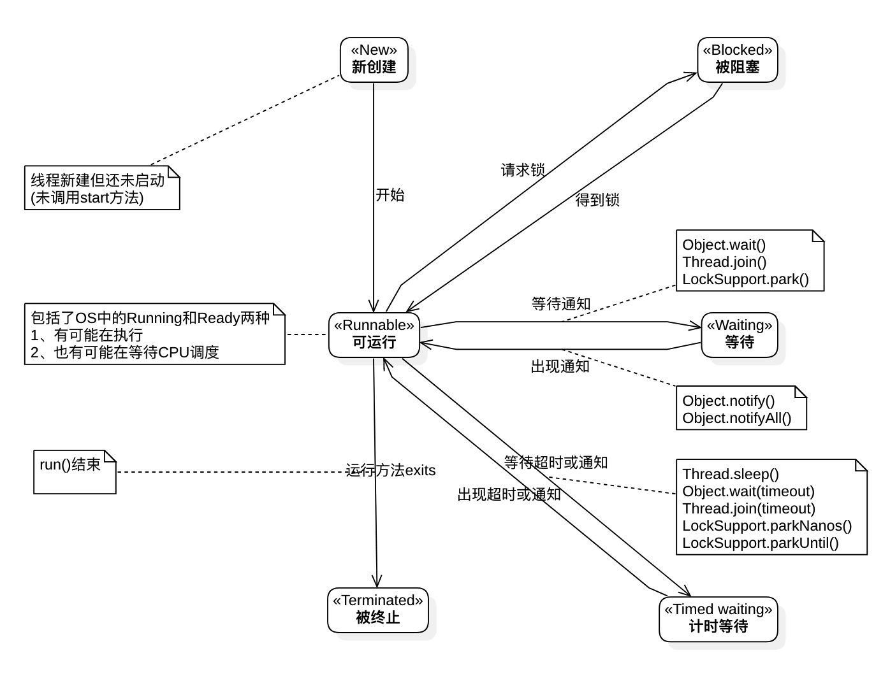

<!DOCTYPE html>


  


<html class="theme-next muse use-motion" lang="zh-Hans">
<head><meta name="generator" content="Hexo 3.8.0">
  <meta charset="UTF-8">
<meta http-equiv="X-UA-Compatible" content="IE=edge">
<meta name="viewport" content="width=device-width, initial-scale=1, maximum-scale=1">
<meta name="theme-color" content="#222">


<meta http-equiv="Cache-Control" content="no-transform">
<meta http-equiv="Cache-Control" content="no-siteapp">


  
  
  <link href="/lib/fancybox/source/jquery.fancybox.css?v=2.1.5" rel="stylesheet" type="text/css">


<link href="/lib/font-awesome/css/font-awesome.min.css?v=4.6.2" rel="stylesheet" type="text/css">

<link href="/css/main.css?v=5.1.4" rel="stylesheet" type="text/css">


  <link rel="apple-touch-icon" sizes="180x180" href="/images/apple-touch-icon-next.png?v=5.1.4">


  <link rel="icon" type="image/png" sizes="32x32" href="/images/favicon-32x32-next.png?v=5.1.4">


  <link rel="icon" type="image/png" sizes="16x16" href="/images/favicon-16x16-next.png?v=5.1.4">


  <link rel="mask-icon" href="/images/logo.svg?v=5.1.4" color="#222">


  <meta name="keywords" content="Hexo, NexT">


<meta name="description" content="线程状态及转换 Java线程相关的方法   方法 定义所在类/接口 作用 说明     run java.lang.Runnable 启动线程，之后线程状态变为可运行,等待CPU调度 抽象方法，实现类实现，线程运行的代码块   start java.lang.Thread 同run方法 调用 new Thread( target:RunnableImpl)指定的target的run方法">
<meta property="og:type" content="article">
<meta property="og:title" content="Java线程">
<meta property="og:url" content="http://differ-work.github.io/java-thread-brief/index.html">
<meta property="og:site_name" content="梦里键指如飞">
<meta property="og:description" content="线程状态及转换 Java线程相关的方法   方法 定义所在类/接口 作用 说明     run java.lang.Runnable 启动线程，之后线程状态变为可运行,等待CPU调度 抽象方法，实现类实现，线程运行的代码块   start java.lang.Thread 同run方法 调用 new Thread( target:RunnableImpl)指定的target的run方法">
<meta property="og:locale" content="zh-Hans">
<meta property="og:image" content="http://differ-work.github.io/diagram/java.lang.Thread/java-thread-state.png">
<meta property="og:updated_time" content="2018-11-17T10:39:25.228Z">
<meta name="twitter:card" content="summary">
<meta name="twitter:title" content="Java线程">
<meta name="twitter:description" content="线程状态及转换 Java线程相关的方法   方法 定义所在类/接口 作用 说明     run java.lang.Runnable 启动线程，之后线程状态变为可运行,等待CPU调度 抽象方法，实现类实现，线程运行的代码块   start java.lang.Thread 同run方法 调用 new Thread( target:RunnableImpl)指定的target的run方法">
<meta name="twitter:image" content="http://differ-work.github.io/diagram/java.lang.Thread/java-thread-state.png">


<script type="text/javascript" id="hexo.configurations">
  var NexT = window.NexT || {};
  var CONFIG = {
    root: '/',
    scheme: 'Muse',
    version: '5.1.4',
    sidebar: {"position":"left","display":"post","offset":12,"b2t":false,"scrollpercent":false,"onmobile":false},
    fancybox: true,
    tabs: true,
    motion: {"enable":true,"async":false,"transition":{"post_block":"fadeIn","post_header":"slideDownIn","post_body":"slideDownIn","coll_header":"slideLeftIn","sidebar":"slideUpIn"}},
    duoshuo: {
      userId: '0',
      author: 'Author'
    },
    algolia: {
      applicationID: '',
      apiKey: '',
      indexName: '',
      hits: {"per_page":10},
      labels: {"input_placeholder":"Search for Posts","hits_empty":"We didn't find any results for the search: ${query}","hits_stats":"${hits} results found in ${time} ms"}
    }
  };
</script>


  <link rel="canonical" href="http://differ-work.github.io/java-thread-brief/">


  <title>Java线程 | 梦里键指如飞</title>
  


</head>

<body itemscope="" itemtype="http://schema.org/WebPage" lang="zh-Hans">

  
  
    
  

  <div class="container sidebar-position-left page-post-detail">
    <div class="headband"></div>

    <header id="header" class="header" itemscope="" itemtype="http://schema.org/WPHeader">
      <div class="header-inner"><div class="site-brand-wrapper">
  <div class="site-meta ">
    

    <div class="custom-logo-site-title">
      <a href="/" class="brand" rel="start">
        <span class="logo-line-before"><i></i></span>
        <span class="site-title">梦里键指如飞</span>
        <span class="logo-line-after"><i></i></span>
      </a>
    </div>
      
        <p class="site-subtitle">规格严格，功夫到家</p>
      
  </div>

  <div class="site-nav-toggle">
    <button>
      <span class="btn-bar"></span>
      <span class="btn-bar"></span>
      <span class="btn-bar"></span>
    </button>
  </div>
</div>

<nav class="site-nav">
  

  
    <ul id="menu" class="menu">
      
        
        <li class="menu-item menu-item-home">
          <a href="/" rel="section">
            
              <i class="menu-item-icon fa fa-fw fa-home"></i> <br>
            
            Home
          </a>
        </li>
      
        
        <li class="menu-item menu-item-archives">
          <a href="/archives/" rel="section">
            
              <i class="menu-item-icon fa fa-fw fa-archive"></i> <br>
            
            Archives
          </a>
        </li>
      

      
    </ul>
  

  
</nav>


 </div>
    </header>

    <main id="main" class="main">
      <div class="main-inner">
        <div class="content-wrap">
          <div id="content" class="content">
            

  <div id="posts" class="posts-expand">
    

  

  
  
  

  <article class="post post-type-normal" itemscope="" itemtype="http://schema.org/Article">
  
  
  
  <div class="post-block">
    <link itemprop="mainEntityOfPage" href="http://differ-work.github.io/java-thread-brief/">

    <span hidden itemprop="author" itemscope="" itemtype="http://schema.org/Person">
      <meta itemprop="name" content="sigh differ">
      <meta itemprop="description" content="">
      <meta itemprop="image" content="/css/images/avatar.png">
    </span>

    <span hidden itemprop="publisher" itemscope="" itemtype="http://schema.org/Organization">
      <meta itemprop="name" content="梦里键指如飞">
    </span>

    
      <header class="post-header">

        
        
          <h1 class="post-title" itemprop="name headline">Java线程</h1>
        

        <div class="post-meta">
          <span class="post-time">
            
              <span class="post-meta-item-icon">
                <i class="fa fa-calendar-o"></i>
              </span>
              
                <span class="post-meta-item-text">Posted on</span>
              
              <time title="Post created" itemprop="dateCreated datePublished" datetime="2018-11-17T17:16:16+08:00">
                2018-11-17
              </time>
            

            

            
          </span>

          

          
            
          

          
          

          

          

          

        </div>
      </header>
    

    
    
    
    <div class="post-body" itemprop="articleBody">

      
      

      
        <h2 id="线程状态及转换"><a href="#线程状态及转换" class="headerlink" title="线程状态及转换"></a>线程状态及转换</h2><p></p>
<h2 id="Java线程相关的方法"><a href="#Java线程相关的方法" class="headerlink" title="Java线程相关的方法"></a>Java线程相关的方法</h2><table>
<thead>
<tr>
<th>方法</th>
<th>定义所在类/接口</th>
<th>作用</th>
<th>说明</th>
</tr>
</thead>
<tbody>
<tr>
<td>run</td>
<td><code>java.lang.Runnable</code></td>
<td>启动线程，之后线程状态变为<code>可运行</code>,等待CPU调度</td>
<td>抽象方法，实现类实现，线程运行的代码块</td>
</tr>
<tr>
<td>start</td>
<td><code>java.lang.Thread</code></td>
<td>同<code>run</code>方法</td>
<td>调用 <code>new Thread( target:RunnableImpl)</code>指定的target的<code>run</code>方法</td>
</tr>
<tr>
<td>sleep</td>
<td><code>java.lang.Thread</code></td>
<td>休眠指定时间(<code>millis</code>), 出让CPU使用权</td>
<td>不会释放锁资源(<code>monitor</code>)</td>
</tr>
<tr>
<td>join</td>
<td><code>java.lang.Thread</code></td>
<td>等待(如指定时间，则最多等待这么多时间)指定线程退出</td>
<td>内部调用 <code>java.lang.Object.wait()</code>方法</td>
</tr>
<tr>
<td>yield</td>
<td><code>java.lang.Thread</code></td>
<td>与<code>sleep</code>类似，只在不低于该线程优先级的线程才可执行</td>
<td>不可指定时间</td>
</tr>
<tr>
<td>wait</td>
<td><code>java.lang.Object</code></td>
<td>使当前线程休眠一段时间直到其他线程调用<code>notify</code>/<code>notifyAll</code></td>
<td>必须在<code>synchronized</code>块中使用，之后进程状态为<code>等待</code>或<code>计时等待</code></td>
</tr>
<tr>
<td>notify</td>
<td><code>java.lang.Object</code></td>
<td>唤起等待队列中(<code>等待</code>或<code>计时等待</code>)线程以获取当前锁对象(<code>monitor</code>)</td>
<td></td>
</tr>
<tr>
<td>notifyAll</td>
<td><code>java.lang.Object</code></td>
<td>唤起所有等待队列中的线程</td>
<td>后续具体哪个被唤起的线程可执行，取决于CPU调度</td>
</tr>
</tbody>
</table>

      
    </div>
    
    
    

    

    

    

    <footer class="post-footer">
      

      
      
      

      
        <div class="post-nav">
          <div class="post-nav-next post-nav-item">
            
              <a href="/spring-boot-start-flow-base-v1-5-4/" rel="next" title="springboot应用启动过程分析(基于springboot 1.5.4)">
                <i class="fa fa-chevron-left"></i> springboot应用启动过程分析(基于springboot 1.5.4)
              </a>
            
          </div>

          <span class="post-nav-divider"></span>

          <div class="post-nav-prev post-nav-item">
            
          </div>
        </div>
      

      
      
    </footer>
  </div>
  
  
  
  </article>


    <div class="post-spread">
      
    </div>
  </div>


          </div>
          


          

  


        </div>
        
          
  
  <div class="sidebar-toggle">
    <div class="sidebar-toggle-line-wrap">
      <span class="sidebar-toggle-line sidebar-toggle-line-first"></span>
      <span class="sidebar-toggle-line sidebar-toggle-line-middle"></span>
      <span class="sidebar-toggle-line sidebar-toggle-line-last"></span>
    </div>
  </div>

  <aside id="sidebar" class="sidebar">
    
    <div class="sidebar-inner">

      

      
        <ul class="sidebar-nav motion-element">
          <li class="sidebar-nav-toc sidebar-nav-active" data-target="post-toc-wrap">
            Table of Contents
          </li>
          <li class="sidebar-nav-overview" data-target="site-overview-wrap">
            Overview
          </li>
        </ul>
      

      <section class="site-overview-wrap sidebar-panel">
        <div class="site-overview">
          <div class="site-author motion-element" itemprop="author" itemscope="" itemtype="http://schema.org/Person">
            
              
            
              <p class="site-author-name" itemprop="name">sigh differ</p>
              <p class="site-description motion-element" itemprop="description"></p>
          </div>

          <nav class="site-state motion-element">

            
              <div class="site-state-item site-state-posts">
              
                <a href="/archives/">
              
                  <span class="site-state-item-count">5</span>
                  <span class="site-state-item-name">posts</span>
                </a>
              </div>
            

            

            

          </nav>

          

          

          
          

          
          

          

        </div>
      </section>

      
      <!--noindex-->
        <section class="post-toc-wrap motion-element sidebar-panel sidebar-panel-active">
          <div class="post-toc">

            
              
            

            
              <div class="post-toc-content"><ol class="nav"><li class="nav-item nav-level-2"><a class="nav-link" href="#线程状态及转换"><span class="nav-number">1.</span> <span class="nav-text">线程状态及转换</span></a></li><li class="nav-item nav-level-2"><a class="nav-link" href="#Java线程相关的方法"><span class="nav-number">2.</span> <span class="nav-text">Java线程相关的方法</span></a></li></ol></div>
            

          </div>
        </section>
      <!--/noindex-->
      

      

    </div>
  </aside>


        
      </div>
    </main>

    <footer id="footer" class="footer">
      <div class="footer-inner">
        <div class="copyright">&copy; <span itemprop="copyrightYear">2018</span>
  <span class="with-love">
    <i class="fa fa-user"></i>
  </span>
  <span class="author" itemprop="copyrightHolder">sigh differ</span>

  
</div>


  <div class="powered-by">Powered by <a class="theme-link" target="_blank" href="https://hexo.io">Hexo</a></div>


  <span class="post-meta-divider">|</span>


  <div class="theme-info">Theme &mdash; <a class="theme-link" target="_blank" href="https://github.com/iissnan/hexo-theme-next">NexT.Muse</a> v5.1.4</div>


        


        
      </div>
    </footer>

    
      <div class="back-to-top">
        <i class="fa fa-arrow-up"></i>
        
      </div>
    

    

  </div>

  

<script type="text/javascript">
  if (Object.prototype.toString.call(window.Promise) !== '[object Function]') {
    window.Promise = null;
  }
</script>


  


  
  
    <script type="text/javascript" src="/lib/jquery/index.js?v=2.1.3"></script>
  

  
  
    <script type="text/javascript" src="/lib/fastclick/lib/fastclick.min.js?v=1.0.6"></script>
  

  
  
    <script type="text/javascript" src="/lib/jquery_lazyload/jquery.lazyload.js?v=1.9.7"></script>
  

  
  
    <script type="text/javascript" src="/lib/velocity/velocity.min.js?v=1.2.1"></script>
  

  
  
    <script type="text/javascript" src="/lib/velocity/velocity.ui.min.js?v=1.2.1"></script>
  

  
  
    <script type="text/javascript" src="/lib/fancybox/source/jquery.fancybox.pack.js?v=2.1.5"></script>
  


  


  <script type="text/javascript" src="/js/src/utils.js?v=5.1.4"></script>

  <script type="text/javascript" src="/js/src/motion.js?v=5.1.4"></script>


  
  

  
  <script type="text/javascript" src="/js/src/scrollspy.js?v=5.1.4"></script>
<script type="text/javascript" src="/js/src/post-details.js?v=5.1.4"></script>


  


  <script type="text/javascript" src="/js/src/bootstrap.js?v=5.1.4"></script>


  


  


	


  


  


  


  

  

  

  
  

  

  

  

</body>
</html>
